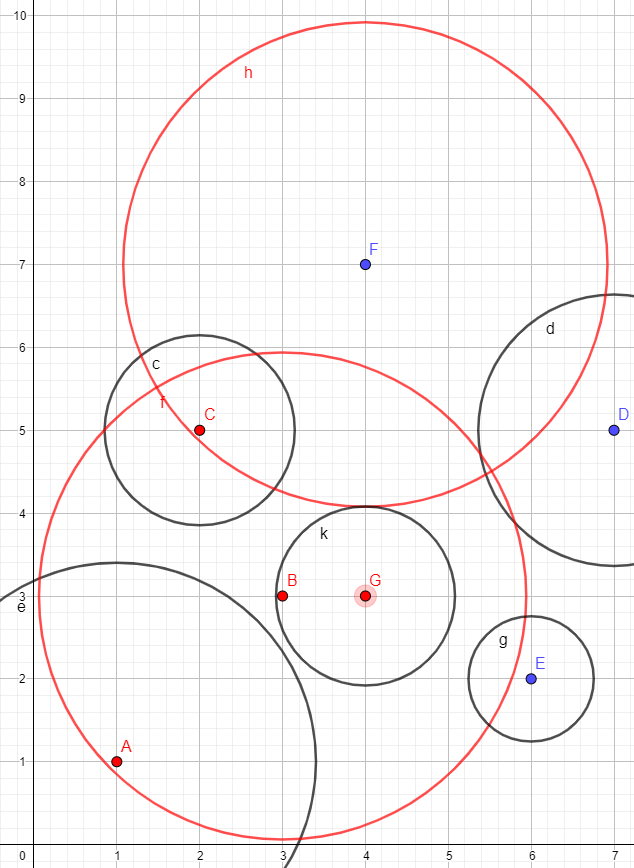

[⭐⭐⭐⭐] 22. Méhek (8 pont)
A brit tudósok felfedeztek egy újfajta "doromboló" méhfajt. Ennek a méhfajnak az egyedei a dorombolásukkal speciális hullámokat bocsájtanak
ki magukból, amik lebénítják áldozataikat, éppen ezért ügyelnek arra, hogy ne menjenek egymáshoz közel. Az új fajból nagyon kevés példány
él, így azonnal védetté nyilvánították őket.
Készítsd el a DoromboloMeh struktúrát, amely tartalmazza a méh sorszámát (egész szám), illetve a méh dorombolásának hatótávolságát
(valós érték).
Készítsd el a dorombolas függvényt, amely paraméterben egy DoromboloMeh pointerekből álló 2 dimenziós tömböt vár, illetve a
tömb sorainak és oszlopainak számát várja. A függvény adja vissza, hogy hány doromboló méh van veszélyben, azaz hány olyan méh van, amelyik
benne van legalább egy másik méh dorombolási hatótávolságában.
A példa szemléltetésére tekintsük a dorombolo_mehek_szemleltetve_egy_szep_szines_abran.png fájlt!

Az ábrán látható, hogy a méhek a 0-tól 7-ig foglalhatnak helyet, így a sorszám és oszlopszám is a példa esetében 8.
Az ábrán a méhek nagybetűvel vannak jelölve, tehát jelen esetben az A, B, C, D, E, F, G pontok a méhek pozíciói. Tehát a C méh a tömb
5-ös indexű sorában, és 2-es indexű oszlopában van. A G méh a 3-as indexű sor 4-es indexű oszlopban.
A tömb többi pozícióján NULL értékek vannak, ezek az ábrán nincsenek jelölve.
A méhek dorombolási hatótávolságai a körök a méhek körül. A piros körök azt jelentik, hogy az adott körben más méhek is tartózkodnak,
tehát ők lesznek veszélyben. A pirossal jelölt méhek vannak veszélyben.
- A: a B méh hatótávolságán belül tartózkodik
- B: a G méh hatótávolságán belül tartózkodik
- C: a B és F méh hatótávolságán belül is tartózkodik
- G: a B méh hatótávolságán belül tartózkodik
A többi méh biztonságban van, nincs a többi hatótávolságán belül, tehát a függvénynek 4-gyel kell visszatérnie.
Züm-züm